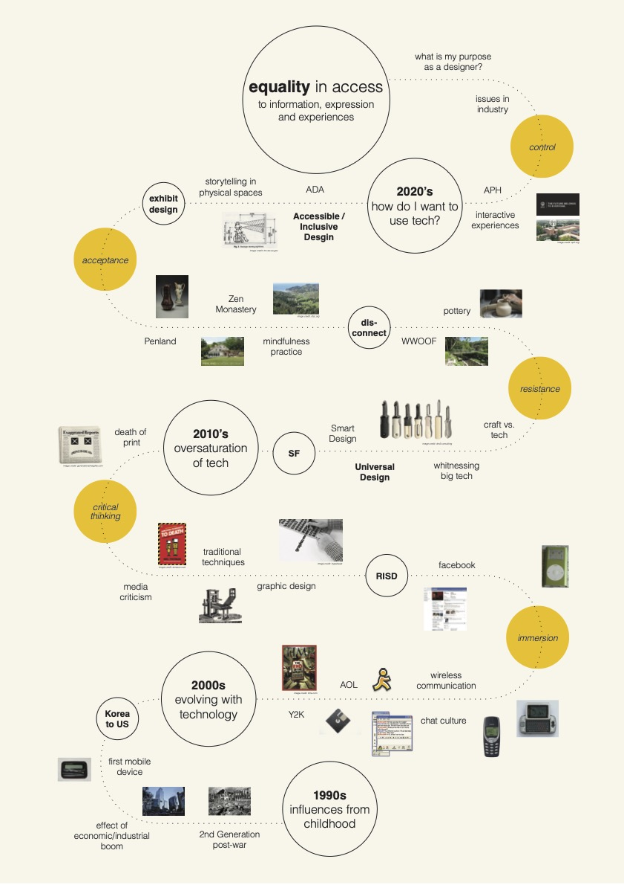

Bootcamp
In this first week, we got an introduction to the course, met the faculties, toured the facilites of Iaac and Elisava along with some of our neighborhood organizations in Poblenou. It was a week of arriving and orienting ourselves here and now. And getting a peak of what is to come in the next few months of this program.
What is my fight?
Our first exercise was to reflect on the question "what is my fight?" and create a poster to share with the class. In the start, I struggled with the concept of having a "fight", since that isn't a word I would typically use to . There are so many topics that are important to me, but if I had to narrow down, I would by mapping my personal journey from youth to now. I thought about all of the events and ideologies that impacted me, the decisions I have made, the struggles I have had, and the and the key points that drove me to the... To give it some context, I chose to filter these events through the lens of Technology because as a millenial and a graphic designer, it has impacted my life and decisions in a big way. At the same time it is a big ... tool that I want to understand and be equiped with for the future. In my poster, I mapped the four? phases of my life and relationship to tech: immersion, critical thinking, resistance, rejection, acceptance and control.

Hybrid Profiles
We learned about designing from a first person perspective and the importance of engaging with community early on in our design process.
The sample (India light) project project was a great example of how as designers, we are often “solving” design problems in our own heads and ultimately designing for ourselves instead of the actual client or audience.
We often fall into the trap of seeing ourselves as creators and problem solvers and the world as a big problem we need to solve. When the reality is that our minds our limited and the connections and sparks we can generate through real-life engagement and interactions (people, places and things),
can provide a depth of understanding, relevance, and unimagined pathways that we could not have thought of alone.

“The professional identity is deduced from the role you typically take in a design process, your strengths and weaknesses as a designer. Your professional identity is constantly developing.” - Oscar Tomico
Following this lecture, we learned about the importance of understanding ourselves (our skills, knowledge and attitudes) on a professional level, and our aspirations. We jotted down our professional identities, then shared our qualities with our classmates, one on one.
With each share, I learned a new quality of a classmate and picked up a quality that I would like to have. This exercise provided a good platform to share about ourselves in ways that we normally wouldn’t.
Personal Development Plan
My personal plan for this term is to learn as much as I can from each of the seminars. To keep an open mind and not be stuck to one path or idea. I